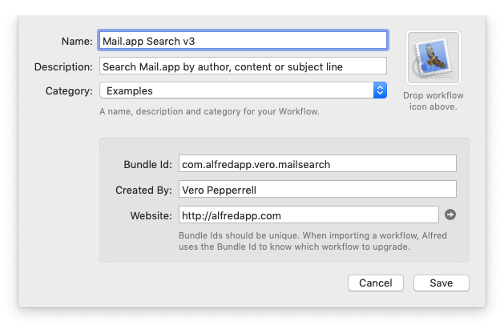
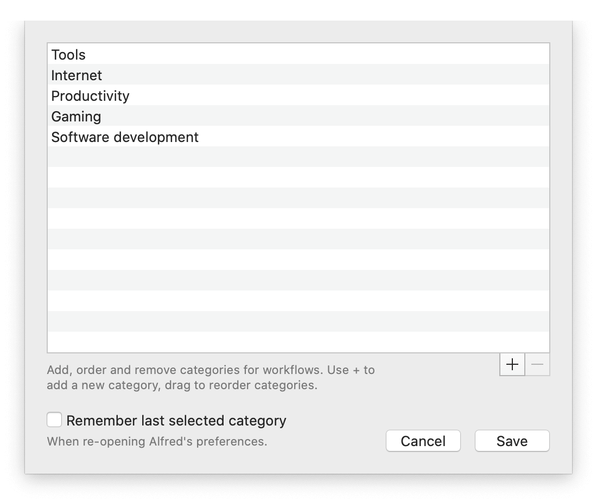
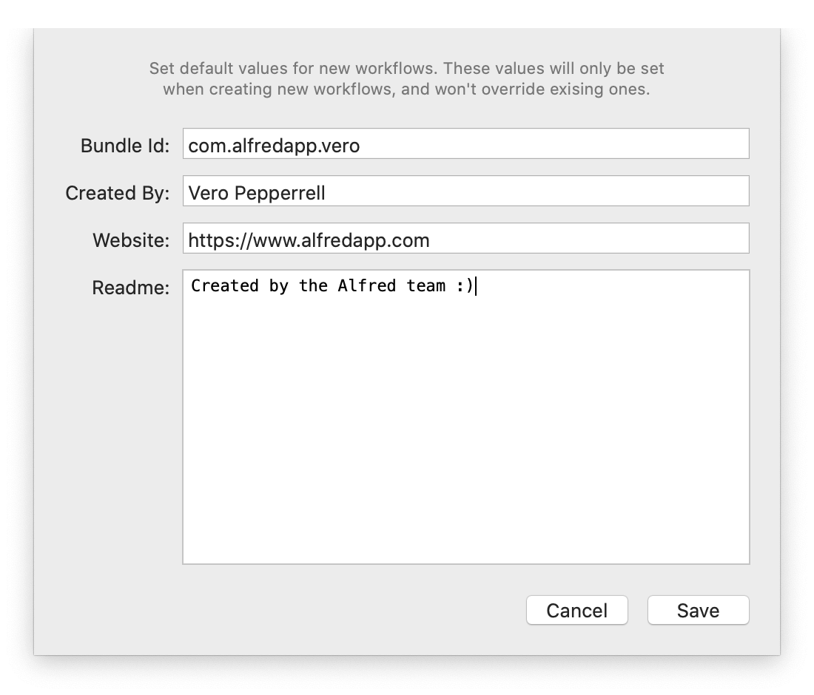

Organising Workflows with Categories and Defaults
Over time, you may find that you've accumulated quite a collection of workflows that you've downloaded from fellow Alfred users or created yourself. You can organise these with a few simple tips.
Categorising workflows
You can categorise workflows so that you can filter by category later on.
Customise the categories list
Click on the magnifying glass in the top left of the Workflows preferences. Select "Edit categories…" to show the list of default categories. You can add or remove any of the categories to make them more useful for your own daily use.

You can also check the "Remember last selected category" box if you want Alfred to remember which category you last browsed when you next launch the preferences.
Categorise your workflows
Once you've set your categories, there are a few ways to categorise workflows.
When creating or importing a new workflow, choose your category from the dropdown menu.

To change the category of an existing workflow, right-click its title in the sidebar to show the menu where you can select a new category.
Improve how you search
Filtering by category
Once you've carefully categorised your workflows, you can choose to filter your workflows to show and search only one category. Filter by clicking on the cog to the right of the workflow search in the Workflows preferences.
Display Options
In the same cog menu, you'll see Display Options enabling you to show or hide various information about your workflows.
If you're a heavy user of hotkeys, you may find it useful to check the "Show Hotkeys" option, so that you can quickly glance down the list of hotkeys that are currently in use.
You can also choose to show only the enabled workflows, show the categories and name of the workflow's creator.
Setting defaults for creating workflows
If you intend to create workflows often, it's worth setting your defaults. Click the + button at the bottom of the sidebar and choose "Workflow Defaults…"
Enter the beginning of your bundle ID, your name and website. Use the Readme to enter any useful information relevant to all of your workflows.

You'll be able to customise this information when creating a new workflow.